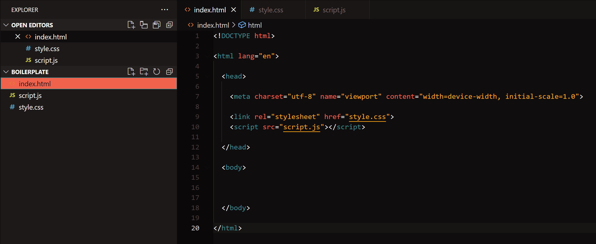

All you need to write with HTML, CSS and JavaScript is a text editor - not a rich-text formatting program like Word, but TextEdit or Notepad will do it.
This semester we will be using VSCode, which is free and cross-platform.
You can add an extension that will run your HTML pages locally too, in your browser of choice - Live Server in VSCode.
Browsers? Firefox all the way, but you're going to need to get used to using all of them for testing purposes, please make sure that you have at least
Firefox and Chrome installed.
The worksheets for the next few weeks introducing HTML, CSS & JavaScript have been designed for you to engage with both through the browser and VSCode at the
same time. We have discussed how to view source (look at the code) of any website in class, it's an essential tool to learning about how others design for
the web, but in this case I'm providing the source code for you to directly reference. Beyond being able to see how specifc code generates information in
the browser you'll also be able to see some best practices of how it's formatted and organised.
Boilerplate Code

The boilerplate code above, which we set up together last week, creates the basic structure for a web page.
The <!DOCTYPE html> tag tells browsers that the document - which is what one HTML file is called - contains HTML code.
The <html> tag specifics where our HTML starts and stops - notice the tag is 'closed' with a </html> tag at the end of the document - the forward
slash indicates a closing tag. Not all tags need to be closed in this way but most do as it allows us to put stuff inside of them.
The <head> tag specifics a section of code which is loaded before the rest of the page - remember the browser will load tags in the order you write them,
top to bottom, left to right.
The <meta> tag includes an attribute 'charset' - or character set - which is set to UTF-8, the
standard for contemporary websites, ensuring all text characters are rendered properly, as well as details of the 'viewport' that will help us make our site
responsive later.
You can see in the source code for this page that I haven't included imports for either CSS or JavaScript in the head tag - however you can see the addition
of a new tag we didn't cover last week. The <title> tag specifies the title of the page in the browser tab above the webpage itself - for example
'HTML Basics' on this page.
The <body> tag specifies the body or substance of the page itself and is where the rest of your code goes.
Task: Open the boilerplate folder from last week and add in a <title> inside of the <head> tag. You can write in a default title if you like
however I tend to leave mine blank and just fill it in whenever I use the boilerplate as a template for a new project.
HTML Elements
A HTML element is one piece of a HTML page - defined by a start tag and end tag and everything in between, as shown below.
HTML elements can be inside - and therefore included in - other elements - this is called nesting. The outside element in this relationship is
called the parent and the element contained inside is called the child.
In this way HTML elements can be thought of as containers - sometimes they contain information, sometimes they contain other HTML elements and sometimes
they contain nothing at all.
It is standard practice to use lowercase text for HTML tags and to indent one tab or two spaces to help show the relationship between parent and
child elements when placing a HTML element inside another - as you can see in the boilerplate code above or the source code for this page. This
formatting helps you to quickly read your code.
People get very passionate about using either spaces or tabs for indents - just pick one and be consistent.
Basic Tags
Here are just some more basic element tags - all of these will require an accompanying closing tag and will display any text typed within in their own
specifc manner.
<h1> to <h6>
<p>
<button>
<ul>
<ol>
<li>
<b>
<strong>
<i>
<em>
<del>
<u>
<sup>
<sub>
Task: Test and identify the above tags by adding them below the <p> tags with their names in the source code for this page. They will all
need to be closed by an accompanying tag, and the <li> tag will only work properly when nested inside <ul> & <ol>. Write what each of
these do inside the tags.
Tip - Remember that HTML is designed specifically for information design and knowing which tag does what will give you a head start on the
visual hierarchy of your page.
HTML Attributes
All HTML elements can have attributes that provide additional information about the element and are contained inside the start tag - they tend
to look like this: name="value".
When writing attribute names and values inside of the HTML tags use lowercase text, " " double quotes around the values and don't leave any spaces
around the equal signs.
Here are some common tag and attribute pairs:
<a> and href - to insert a link just include the URL as the href value. You can then write whatever you like inside of the tag itself and it'll
use the href to work out where to go.
<img> and src, width, height and alt - to insert an image, specify the source image, its size and provide
alternative text, an important first step in
improving the accessibility of your site.
And here some attributes that can be used with most tags:
title - this can specify a title for the tag, like we did for our document, and allows that title to show while hovering over the tag with your cursor
(try it on this sentence).
style - this allows us to specify how an element will appear in the browser, we'll get to this can do in more detail next week, but for now know that
it can be used to change the element's appearance.
!IMPORTANT NOTE! - HTML, CSS and JavaScript use American English spelling 🙄 so for example while here in the instructions I refer to using a colour be sure
to spell it color in your attributes.
Task:
Open a new window in VSCode to open your assignment1 project folder inside where you need to add the following inside the <body>:
Add a page heading element to the page using an appropriate HTML tag from the previous section's list
Add an <a> tag to the <body> that links to the website you've chosen to research.
Add a style attribute inside the opening <body> tag and use it to set the background colour for your webpage. You can see examples of how to write
this in the <section> tags throughout the source code to this page. We'll discuss the multiple ways to choose colours next week but for now use one
of the names from this list.
HTML Block and Inline Elements
All elements have default ways they are displayed - the most common are block and inline.
Block level elements always start on a new line and take up the full width available of their parent element.
<div> is a block level element that is specifically used as container for other elements.
Inline elements don't take a new line and only take up the space necessary.
<span> is an inline element that is specifically used as a container for other elements.
Inside the <p> tag below this one there is an inline <span> element - try changing out the tags so it's a <div> instead and notice
how it changes on the webpage.
This is some test writing so you can see how elements react to being either inline or block.
These elements do not have required attributes but are commonly used with style, class and id.
The class attribute is used to specify a name for a group of tags so that they can be used together.
The id attribute is used to specify a unique identifier for a tag.
Examples of class and id can be seen if you view source on this page.
While it is quite common to just use <div> and <span> elements when constructing web pages, both contain little information about what is inside
them beyond whether they should display as block or inline. <div> is just a "generic container" as is <span>. Information design
best practice is to always use the most appropriate element for what's inside it - for example you can see that each section of this web page is wrapped in
a <section> element rather than a <div> element, even if they're "functionally" the same. For an extensive list of the different elements and
brief descriptions about what they are used for you can look at
this MDN page (this is also linked in the Week 2 modules).
Task: Add a container to assignment1's index.html <body> for each of this week's research questions - you might want to refer to the above link to get
some ideas. Then add in an appropriate heading element to each container with the relevant question and a paragraph element to contain your response.
HTML Audio and Video
Audio and video can be embedded in an HTML page using the <audio> and <video> elements - like <img> in both cases a src attribute is needed to
link to a media file.
Source links to media can be given as absolute or relative paths - have a look at href's in the page's source code in the following examples:
It is best practice to use relative paths where possible.
The <audio> tag above has two attributes - src with works in a similar way to href but links in the audio file you want it to play, and the controls
attribute which doesn't need a value, if it's included it gives users a built in set of controls for the audio file.
The video element works in much the same way and makes use of both src and controls attributes.
Task: Add a video file to the HTML project folder and try adding it to this page using a video element in the source code below the audio element, making
sure to link the src with a relative path and add some controls to try and play the video back in the browser. Once you've got that working, take a screenshot
of your research website, copy it into your assignment1 folder and include it in your HTML using an img element with a relative src path.
HTML Comments
You can add comments to your code - text that will be ignored by the browser - using the <!-- and --> tags - see the example in the code below. I've also
added several other comments to the source code as notes explain some extra details about writing HTML.
A key part of assessments two and three this semester will require the use of comments in your code - we'll talk more about how to approach this in later weeks
but for now it's just good to know how to write them in the different web languages - I'll show examples of CSS and JavaScript comments in their respective
worksheets.
Task: Add a comment to assignment1's index.html briefly explaining which container element to place your questions inside of and why.
Key Task for the Week
Your assignment1's index.html should now include a page title and heading, a screenshot of and link to your research website and container elements ready for
each of this week's research questions. Now all you need to do is fill in the questions and answers - we'll get to additional CSS styling techniques next week
but you already have a good start most of the assignment's HTML coding requirements.


HTML Comments
You can add comments to your code - text that will be ignored by the browser - using the <!-- and --> tags - see the example in the code below. I've also added several other comments to the source code as notes explain some extra details about writing HTML.
A key part of assessments two and three this semester will require the use of comments in your code - we'll talk more about how to approach this in later weeks but for now it's just good to know how to write them in the different web languages - I'll show examples of CSS and JavaScript comments in their respective worksheets.
Task: Add a comment to assignment1's index.html briefly explaining which container element to place your questions inside of and why.